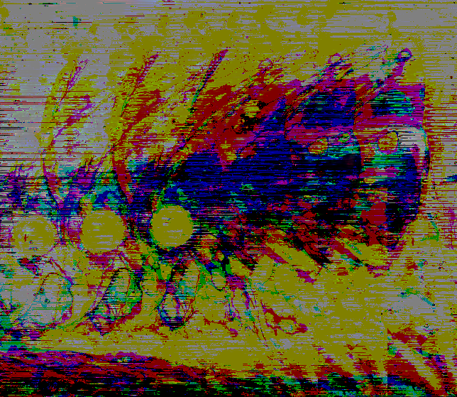

Hyperspace Moth
Acting as an experiment, this moth image was made from a combination of deep dream, a space image, and a few audacity filters. There's something about the way the main body splits apart and repeats that gives me the feeling of hyperspace and warp drives that most sci-fi uses. It feels almost as if the moth's getting sent through a wormhole.